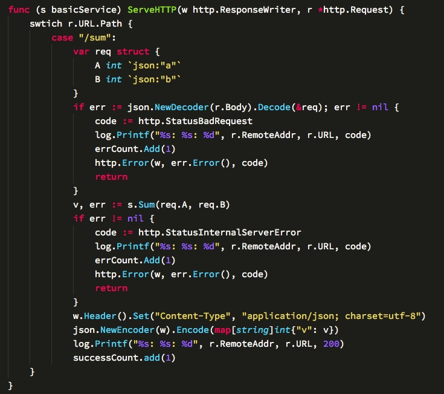
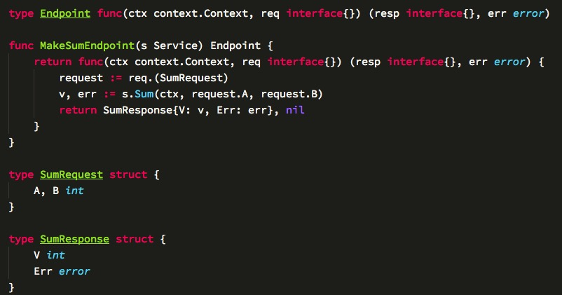
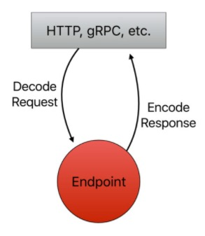

2017.5.17 @NBCB 微信号: keviswang
业务: What do you want
服务: What can i do for you
metrics
这样实施微服务的成本就大大提高了。。。
参考go下的大框架，java下有比较成熟的netfix开源的spring cloud套件
建议采用rpc，实际使用性能更好点
服务注册发现: consul > etcd > zookeeper
API网关: nginx, kong(基于nginx和lua)
当然spring cloud套件是一个可以快速实现微服务的框架，但是有太多magic的地方，不太容易定位到细节问题
Metrics: Prometheus接入
分布式跟踪: Opentracing